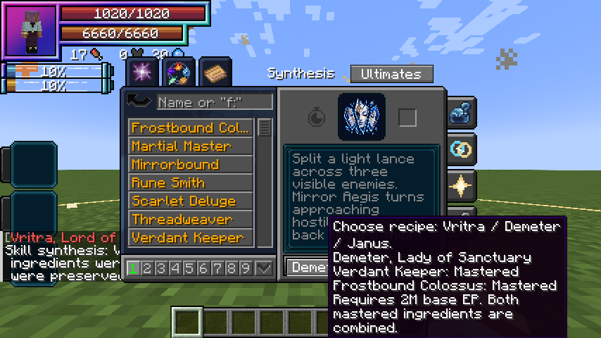

Skill synthesis combines two mastered Unique Skills into one new Ultimate. It is available to any race at 2,000,000 total EP.
Recipes
| Ultimate | Mastered ingredient 1 | Mastered ingredient 2 | Role |
|---|---|---|---|
| Vritra | Storm Crown | Black Flame | Plasma / delayed demolition |
| Demeter | Verdant Keeper | Frostbound Colossus | Allied support / crystal control |
| Janus | Threadweaver | Mirrorbound | Gates / spatial displacement |
| Anansi | Threadweaver | Rune Smith | Runic threads / triangular traps |
| Aegir | Scarlet Deluge | Mirrorbound | Water refraction / tidal shock front |
Using the menu
Open Skills → Ultimate, then choose Synthesis at the top of the native skill page. The native list still shows your learned Uniques and their details. The footer’s recipe button cycles Vritra → Demeter → Janus → Anansi → Aegir; hover it or Combine to see both ingredients and their mastery states. Combine becomes available when all requirements are met. Use Ultimates to return to the ordinary native Ultimate list.
The server checks the complete recipe and EP requirement. An invalid request consumes nothing. A successful synthesis combines both ingredients, preserves all nine equipped presets and carries the longest remaining ingredient cooldown to every new mode. The new Ultimate starts with its own mastery. EP is a threshold and is not spent. A different mastered skill is not a substitute for a required ingredient. Unrelated skills stay learned.
Further evolution
Master the resulting Ultimate, become a True Hero or True Demon Lord and reach 12M total EP. Skills → Godly → Ascension offers Aion, or Thoth when a mastered Rune Smith is also available. Lugh additionally combines a mastered Threadweaver. The Godly destination button cycles between Aion, Thoth and Lugh.
Standalone Uniques
All Uniques remain usable independently. Scarlet Deluge combines with Mirrorbound into Aegir; Rune Smith combines with Threadweaver into Anansi. Rune Smith is also Thoth’s additional ascension ingredient, while Threadweaver is Lugh’s. Each successful recipe consumes its listed ingredients.
Gallery
